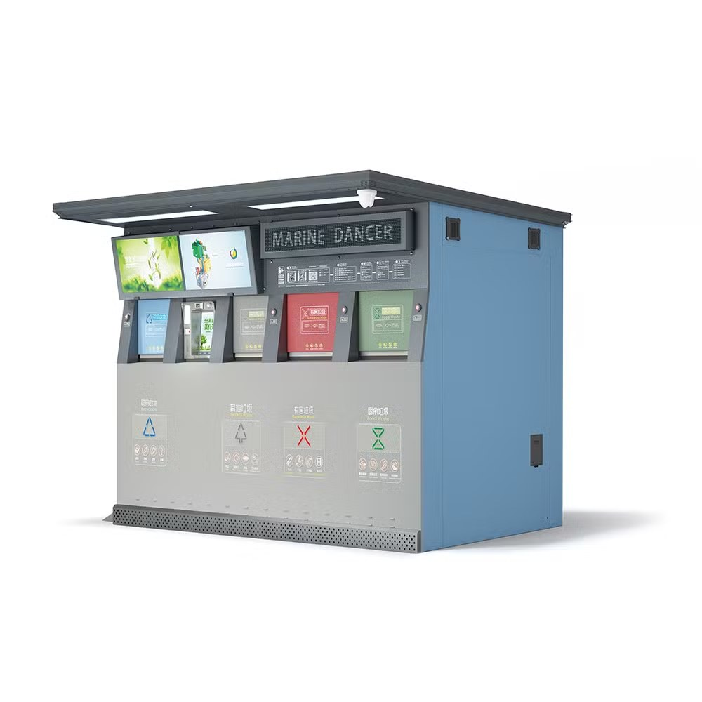

[Imagen pendiente]Sistema automatizado para clasificación de residuos reciclables
Sistema embebido para clasificar automáticamente los residuos, orientado a reducir la contaminación ambiental mediante una separación más eficiente de materiales reciclables.